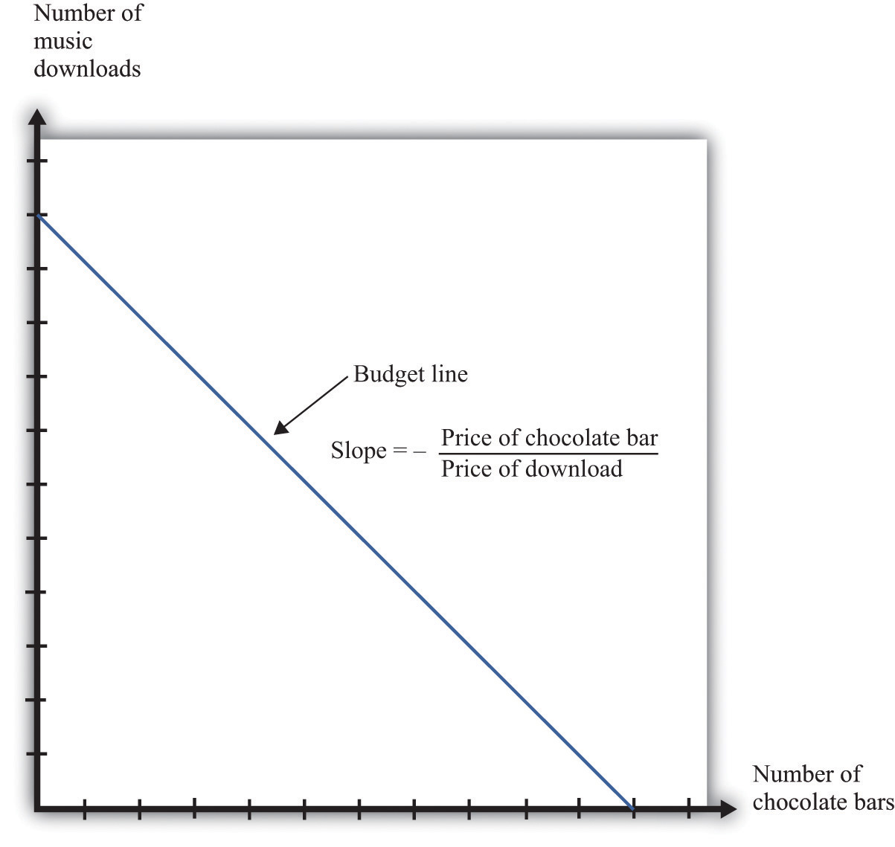
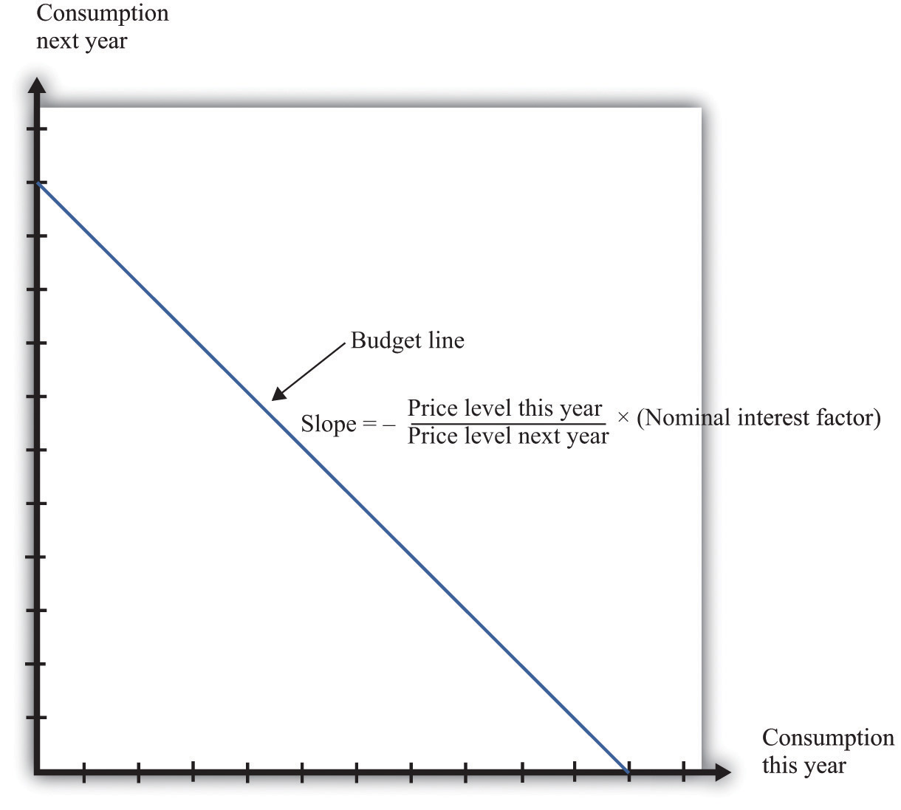
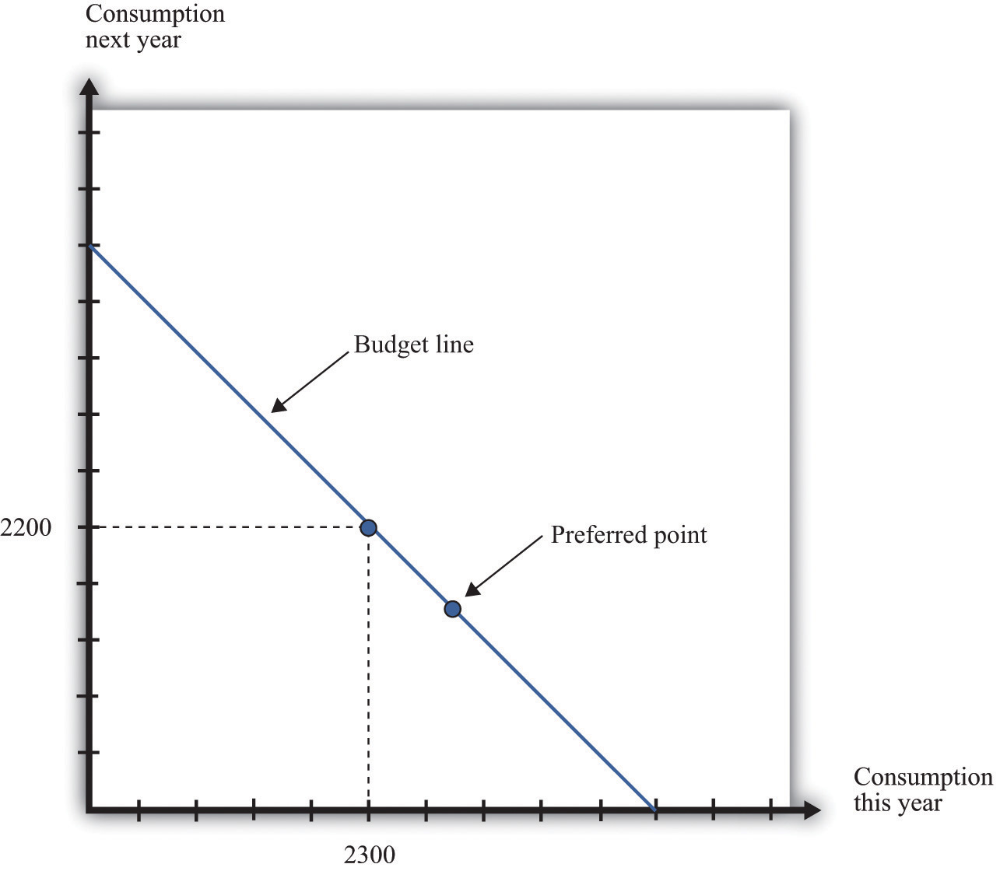
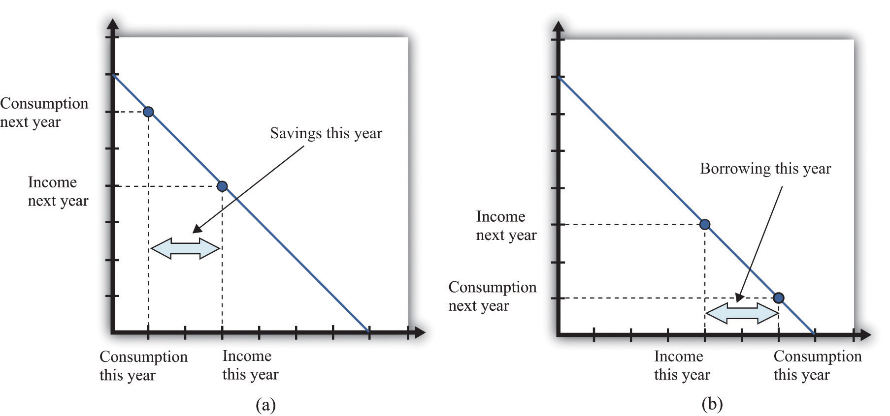
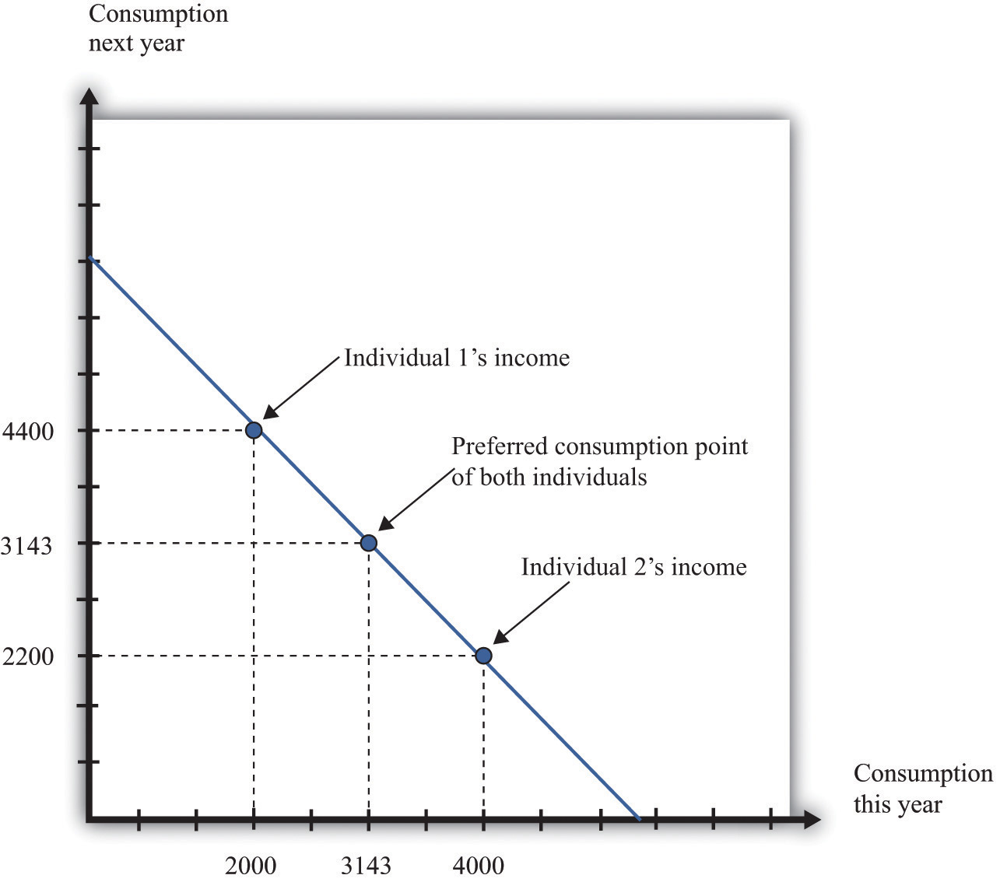
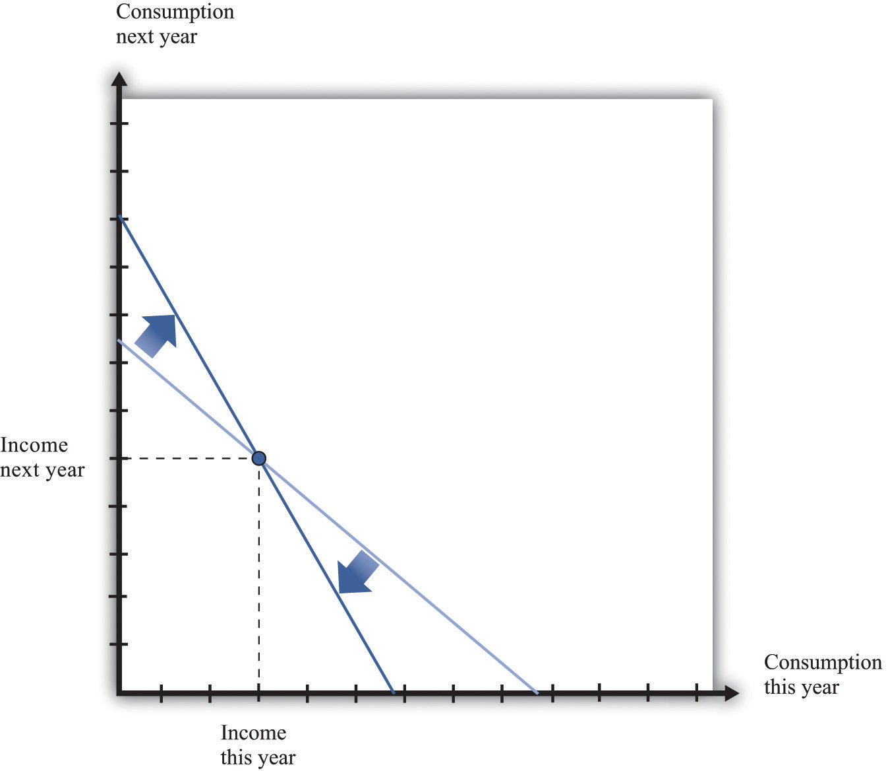
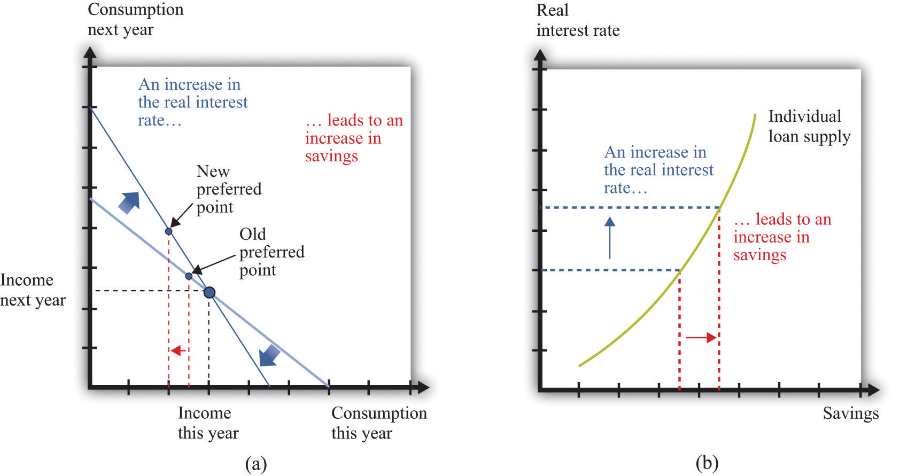
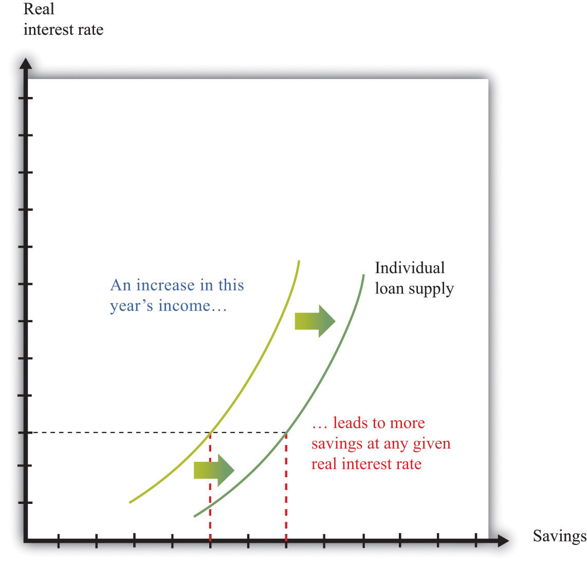

Your choice at any given time between two goods—say, chocolate bars and music downloads—reflects the tension between your desires for chocolate bars and downloads and your income, as summarized by your budget line. The budget line shows us the bundles of goods and services that you can afford, given prices and your income, under the presumption that you do not throw any money away. For an individual choosing between two goods only (chocolate bars and music downloads), the budget line states that total spending is equal to spending on chocolate bars plus spending on downloads:
(number of chocolate bars × price of a chocolate bar) + (number of downloads × price of download) = disposable income.Figure 5.1 "The Budget Line with Two Goods" displays the budget line for the choice between downloads and chocolate bars.
Toolkit: Section 31.1 "Individual Demand"
You can review the derivation and meaning of the budget line in the toolkit.
Figure 5.1 The Budget Line with Two Goods
This diagram shows the budget line for an individual choosing between chocolate bars and music downloads. The slope of the budget line reflects the rate at which an individual can trade off the two goods.
The slope of the budget line is
As you move along the budget line, you are giving up downloads to get chocolate bars. If you give up one chocolate bar, you get an amount of money equal to the price of a chocolate bar. You can take this money and use it to buy music downloads. You have to divide this amount of money by the price of a download to determine how many downloads you can buy. The slope of the budget line reflects the opportunity cost of chocolate bars in terms of music downloads.
Now think about what the budget line looks like when we are choosing between now and the future. Just as we find it easier to think about the choice between two goods rather than among 2,000 goods, so too is it easier to think about the choice over only two periods of time. We call these two periods “this year” and “next year.” There is nothing special about the two-period example beyond the fact that it makes it easy to draw diagrams and see what is going on. The principles that we uncover for this case also apply to decisions made with more than two time periods in mind.
We also do not worry about all the different goods and services that are available, preferring instead to talk in general about consumption this year and consumption next year. We aggregate together all the different products that we consume. Thus “consumption” means the bundle of goods and services people consume. This consumption also has an associated price, which we call the price levelA measure of average prices in an economy.. Think of this as the average price of goods and services in the economy. If you find it easier, imagine there is a single good, like chocolate bars, that you consume, and think of the price level as simply being the price of a chocolate bar.
If you choose not to spend all your income on consumption this year, you are saving. When you save, you can put your money into a financial institution and earn interest on it. Suppose you have $100 this year that you save by putting it in a bank. You are then lending to the bank—saving and lending are really the same thing. The bank acts as an intermediary, taking your $100 and giving it to someone else who borrows from the bank.
The bank offers you interest on this loan—for example, it may pay a nominal interest rateThe rate at which individuals and firms in an economy can save or borrow. of 5 percent per year. After a year, your bank account will contain your original $100, plus an extra 5 percent. Because 5 percent of $100 is $5, you earn $5 worth of interest. We talk about interest rates in percentage terms, but you should remember that a percentage is simply a number. For example, 5 percent is 0.05, and 20 percent is 0.2. The nominal interest rate is the interest rate at which individuals and firms in the economy can save or borrow.There are actually many different interest rates in an economy. Chapter 10 "Making and Losing Money on Wall Street" looks at some of these. Here, we simplify the process by supposing there is only one interest rate. It is called a nominal interest rate because it is measured in monetary terms. Most interest rates are quoted on an annual basis, meaning that they specify the amount earned per year.
Of course, if you put a $100 in the bank for one year, then next year you will still have the original $100 as well as the interest you earned. At an interest rate of 5 percent, $100 this year is worth $105 next year. To calculate the total amount of money that you can earn, we simply add one to the nominal interest rate, giving us the nominal interest factorA factor, equal to 1 + the nominal interest rate, used to convert dollars today into dollars next year.:
nominal interest factor = 1 + nominal interest rate.The nominal interest factor is used to convert dollars today into dollars next year.
Toolkit: Section 31.6 "The Credit Market"
The nominal interest rate is the rate at which individuals and firms in the economy can save or borrow. The nominal interest factor is 1 + the nominal interest rate.
In this chapter, we typically use the nominal interest factor rather than the nominal interest rate because it makes the equations easier to understand. Just keep in mind that it is easy to move back and forth between the interest rate and the interest factor by adding or subtracting one.
If you have $100 today, then tomorrow it will be worth $100 × the nominal interest factor. In general,
z this year will be worth z × the nominal interest factor next year.Armed with this idea of the nominal interest factor, we can graph the budget line for a two-period consumption-saving problem. Figure 5.2 "The Budget Line with Two Periods" shows consumption this year on the horizontal axis and consumption next year on the vertical axis. To discover what the budget line looks like, we first determine its slope and then its position.
Figure 5.2 The Budget Line with Two Periods
This diagram shows the budget line for an individual choosing consumption over time. The slope of the budget line depends on the price level this year, the price level next year, and the nominal interest factor (= 1 + nominal interest rate). Suppose the price level this year is $9, the price level next year is $10, and the nominal interest rate is 20 percent. Then the slope of the budget line is −(9/10) × 1.2 = −1.08. This means that if you give up 1 unit of consumption this year, you can get 1.08 units next year.
The slope of the budget line tells you how much extra consumption you will get next year if you give up a unit of consumption this year. So to determine the slope of the budget line, we use the following thought experiment.
Next year, you can take these funds and purchase
units of consumption.
So the slope of the budget line is as follows:
We show the budget line in Figure 5.2 "The Budget Line with Two Periods".
The budget line has a negative slope because—as with the choice between chocolate bars and downloads—you must give one thing up to get another. If you want to consume more in the future, you must be willing to consume less right now. If you want to consume more now, you will have to sacrifice consumption in the future.
The slope of the budget line depends not only on the nominal interest factor but also on prices this year and next year. Suppose the price of a unit of consumption this year is $100 and next year it is $110. Economists call the percentage increase in the price level the inflation rateThe rate at which the overall price level in an economy is growing.; it is calculated as follows:
Put differently, it is the rate of growth of the price level. In our example, the inflation rate is 10 percent.
Now suppose the nominal interest rate is also 10 percent, which means that the nominal interest factor is 1.1. Then
In this case, the price level increased by 10 percent, from 100 to 110. But the nominal interest rate also increased by 10 percent, which offset the increase in prices. We see that the slope of the budget line depends on both the nominal interest factor and the rate of inflation. In fact, it depends on the real interest factorA factor, equal to 1 + the real interest rate, that allows you to convert units of goods and services this year into units of goods and services next year.:
slope of budget line = −(1 + real interest rate) = −real interest factor.Toolkit: Section 31.6 "The Credit Market"
The real interest rate is the rate of interest adjusted for inflation. It tells you how much you will get next year, in terms of goods and services, if you give up a unit of goods and services this year. The real interest factor allows you to convert units of goods and services this year into units of goods and services next year. The real interest factor is 1 + the real interest rate.
As you move along the budget line in Figure 5.2 "The Budget Line with Two Periods", you are giving up chocolate (consumption) this year for chocolate next year. So the slope of the budget line must be a number, not a dollar amount. Because this year’s price and next year’s price are both denoted in dollars, their ratio is a number. Likewise, the interest rate is a number, so the slope of the budget line is indeed a number.
An example may help you understand the difference between the nominal interest rate and the real interest rateThe rate of interest adjusted for inflation.. Suppose you go to your bank and get a one-year, $20,000 loan to buy a car, with a nominal interest rate of 5 percent. Your contract with the bank thus stipulates that you must pay the bank $21,000 at the end of the year. If the inflation rate is zero, then the cost of borrowing measured in terms of real goods and services is $1,000, which is 5 percent of the amount that you borrowed. But if the inflation rate is 5 percent, then the $21,000 you pay to the bank at the end of the loan buys the same amount of goods and services that the $20,000 the bank lent to you. In this case, you are effectively able to borrow for free.
Good decisions about borrowing and lending are based on real interest rates rather than nominal interest rates. Your cost of borrowing to buy the car is not the monetary payments you make on the loan but rather the value of the goods and services you could have purchased with that money. So we need a way to convert from the commonly observed nominal interest rate to a measure of real interest rates. We do this by using a formula for the real interest rate that was discovered by a famous economist named Irving Fisher.
Toolkit: Section 31.8 "Correcting for Inflation"
The Fisher equation is a formula for converting from nominal interest rates to real interest rates, which is as follows:
real interest rate ≈ nominal interest rate – inflation rate.Equivalently,
real interest factor ≈ nominal interest factor – inflation rate.For example, suppose the nominal interest rate is 5 percent. If the rate of inflation is zero, then the real interest rate is 5 percent. But if the rate of inflation is 4 percent, the real interest rate is only 1 percent. The Fisher equationA formula for converting from nominal interest rates to real interest rates: the real interest rate equals the nominal interest rate minus the inflation rate. is a tool that tells us how to convert nominal interest rates—the interest rates you see in the newspapers and on television—into real interest rates, which are key for decision making.The precise formula is as follows:This equation is, to a very good approximation, the same as the one in the text.
Whereas the slope of your budget line depends on the real interest rate, the position of your budget line depends on how much income you have. When you have more income, the budget line is further away from the origin. One way to determine the position of the budget line is by looking at its intercepts. The horizontal intercept is the amount you can consume this year if you spend all of this year’s income and borrow against your entire future income. The vertical intercept is the amount you can consume next year if you choose to consume nothing this year and save all of your current income.
It is easier and more instructive, however, to look at a different point on the budget line. Remember that the budget line is the bundles of consumption you can just afford. One bundle you can certainly afford is the bundle where you spend all of this year’s income on consumption this year and all of next year’s income on consumption next year. In other words, one available option is that you neither save nor borrow. In this case,
and
On the right-hand side of these equations, we divided dollar income by the price level to give us real income (that is, income measured in terms of purchasing power). We must do this to find out how much you can consume in terms of goods and services.
For example, suppose your nominal income this year is $23,000, and your nominal income next year is $24,200. Suppose the price level this year is $10 and the price level next year is $11. This means that
and
So one possible consumption choice, as shown in Figure 5.3 "Determining the Position of the Budget Line", is 2,300 units of consumption this year and 2,200 units of consumption next year. In this case, you are neither borrowing nor saving. Of course, you might choose some different point on the budget line. Figure 5.3 "Determining the Position of the Budget Line" shows that your real income this year and next year does indeed pick out a point on the budget line. And because we already know the slope of the budget line, we are done; we can now draw the budget line.
Figure 5.3 Determining the Position of the Budget Line

The position of the budget line depends on income this year and next year. We know that one possible choice of consumption is where the consumer neither saves nor borrows. This means that the budget line must pass through this point.
Your budget line describes the condition that total spending equals total income. This is true for the choice about the consumption of downloads and chocolate bars, and it is also true for the choice over time. But once we move to two periods, we must be careful about measuring both total income and total spending.
Suppose you earn some income this year (say, $23,000) and will earn some more next year (say $24,200). What is your income for these two years together? Your first instinct is probably to add the income in the two years and say $47,200. Superficially this makes sense—after all, income is measured in dollars in both years. Unfortunately, this is not a very good way to add money over time. It is flawed because it views income in two different years as if they are the same thing. In fact, money this year and money next year are not the same.
Imagine that a friend asks to borrow $1,000 from you today, promising to pay you back the $1,000 twenty years from now. Would you be likely to agree to this? Even if you trust your friend completely, the answer is surely no. After all, you could take your $1,000 and put it in the bank for twenty years, and the bank will pay you interest on your money—that is, the bank is willing to pay you for the privilege of using your money. Over twenty years, you could earn quite a bit of interest. By contrast, your friend is asking for a zero-interest loan in which no interest is paid on the money that you lend.
Positive interest rates mean that a dollar today and a dollar in the future are not worth the same. Adding dollars in one year to dollars in another year makes no more sense than adding apples and oranges. We need to convert dollars next year into their value right now. Remember that
z this year will be worth z × the nominal interest factor next year.We can turn this around. If the interest rate is 5 percent, then $105 next year will be worth only $100 this year. A dollar next year is worth dollars this year. This is the most you would be willing to give someone this year if he or she promised to give you a dollar next year. You would not give them more than this because you would lose money relative to the alternative of putting the dollar in the bank and earning interest. More generally,
Toolkit: Section 31.5 "Discounted Present Value"
Unless the interest rate is zero, a dollar this year is not the same as a dollar a year from now. To avoid this problem, economists use discounted present value as a device for measuring flows that occur over time. Discounted present value tells you the value of something you will receive in the future, discounted back to the present.
For example, if we want to add income in dollars over two years, the discounted present valueA technique that allows us to compare the value of sums of money received at different dates. of such a two-year flow of income is given by the following formula:
This is the income term that we need for the budget line in our two-year example. Go back to our earlier example, where income this year is $23,000 and income next year is $24,200, and the nominal interest factor is 1.1. Then
Even though income next year is higher in dollar terms, it is lower in terms of present value: $24,200 next year is worth only $22,000 today. Notice that when we measure the discounted value of a flow of nominal income, we still end up with a nominal value—the value of the income flow in terms of this year’s dollars.
Table 5.1 "Discounted Present Value of Income" provides another illustration: it shows the calculation of the discounted present value of income when this year’s income is $100 and next year’s income is $200. You can see that, as the interest rate increases, the discounted present value of income decreases.
Table 5.1 Discounted Present Value of Income
| Nominal Income This Year ($) | Nominal Income Next Year ($) | Discounted Present Value of Nominal Income Flow ($) | ||
|---|---|---|---|---|
| Nominal Interest Rate | ||||
| 0% | 5% | 10% | ||
| 100 | 200 | 300.00 | 290.47 | 281.82 |
| 250 | 500 |
When we want to add consumption spending this year and next year, measured in dollars, we use exactly the same logic as we did when adding income. Nominal consumption this year and next are given as follows:
nominal consumption this year = price level this year × consumption this yearand
nominal consumption next year = price level next year × consumption next year.(Again, if you find it easier, just think of this as chocolate: total spending is the number of chocolate bars purchased times the price per bar. When we talk about “consumption,” we mean something measured in real units, such as chocolate bars. When we talk about “nominal consumption,” we are referring to a value measured in dollars.) Just as it is incorrect to add this year’s and next year’s income, so too should we not add together nominal consumption. Instead, we must calculate a discounted present value, exactly as we did before.
As with income, the discounted present value of nominal consumption is measured in this year’s dollars.
Earlier, we emphasized that people think about the real interest factor when they are comparing this year and next year. Yet in calculating the discounted present value of income and consumption spending, we are using the nominal interest factor. What is going on?
The rule for determining which interest factor to use in a discounted present value calculation is simple. If you are converting nominal values, then you should use the nominal interest factor. If you are converting real values, then you should use the real interest factor. So if you want to know how much a given number of dollars in the future will be worth in dollars today, you should use the nominal interest factor. This is the normal case for most calculations that you would do. However, if you want to calculate a discounted present value for variables that have already been corrected for inflation, you must use the real interest factor. In this case, the answer you get is also a real quantity.
The tool of discounted present value gives us another way of thinking about the two-period budget line—the condition that
discounted present value of two-year flow of nominal consumption = discounted present value of two-year flow of nominal income.Remember that both sides of this equation are measured in terms of this year’s dollars. If we were to divide both sides of this equation by this year’s price level, then we would get the equivalent expression in real terms:
discounted present value of two-year flow of consumption = discounted present value of two-year flow of real income.In this case, as we just explained, the discounting must be done using the real interest factor instead of the nominal interest factor.
Given your budget line, we suppose you choose a combination of consumption this year and next year that makes you as well off as possible. An example of such a preferred point is indicated in Figure 5.4 "The Preferred Point".
Figure 5.4 The Preferred Point
The consumer’s preferred point must lie somewhere on the budget line. In this example, the consumer is choosing to consume in excess of his income this year. The consumer must borrow against future income, which means that consumption next year will be below next year’s income.
The choice of a preferred point reflects two ideas. Whatever your tastes between consumption in the two years, we presume that you will not throw any income away. As a result, your choice will be on, not inside, the budget line. Further, if you choose well, according to your preferences, then you will pick the best combination of consumption; there is no other point on the budget line that you prefer.
Your preferred point implies a choice about how much saving or borrowing you do. Figure 5.5 "Consumption and Saving" shows two possible cases. In part (a) of Figure 5.5 "Consumption and Saving", you are a saver: you are consuming less than your income this year. The difference between your income and your consumption is the amount of your savings. Those savings, plus interest, are available to you next year, so next year you can consume in excess of your income. In part (b) of Figure 5.5 "Consumption and Saving", you are a borrower: you are consuming more than your income this year. When you borrow this year, you must repay the loan with interest next year, so your consumption next year is less than your income.
Figure 5.5 Consumption and Saving
(a) The individual is a saver this year. (b) The individual is a borrower this year.
The budget line tells you the rate at which the market allows you to substitute goods between this year and next year. This is distinct from your personal tastes about consuming this year or next year. The saver in part (a) of Figure 5.5 "Consumption and Saving" is a relatively patient person: she is willing to give up a lot of consumption this year to be able to consume more next year. The borrower in part (b) of Figure 5.5 "Consumption and Saving" is a relatively impatient person: he wants to consume a lot this year and is willing to sacrifice a great deal of future consumption.
You will sometimes hear discussions of how much individuals like to “discount the future.” This is a statement about their tastes. Someone who discounts the future a great deal is impatient. Such a person wants to consume right away, so he will give up a lot of future consumption to have more today. Someone who discounts the future only a little is patient. Such a person is willing to give up consumption today even if she gets only a little extra consumption in the future. Economists pass no judgment on whether it is better to be impatient or thrifty. These are matters of personal preference.
Interestingly, the timing of your income turns out not to matter for your choice of consumption, which is illustrated in Figure 5.6 "The Timing of Income".
Figure 5.6 The Timing of Income
The timing of income is irrelevant to the consumption choice. Here, one individual has low income this year and high income next year, while the opposite is true for the other individual. However, the discounted present value of income is the same in both cases. If they both have the same tastes, they will choose the same consumption point.
Suppose that the nominal interest rate is 10 percent and that the price level is $10 in both periods. This means that the inflation rate is zero, so—from the Fisher equation—the real interest rate is also 10 percent. Now imagine that there are two individuals who have identical tastes. One of them earns income of $40,000 this year and $22,000 next year, so real income (nominal income divided by the price level) is therefore 4,000 this year and 2,200 next year. The other person earns $20,000 this year and $44,000 next year, yielding a real income of 2,000 this year and 4,400 next year. Both of these individuals share the same budget line (see Figure 5.6 "The Timing of Income"). This is because the discounted present value of their nominal income is the same: $60,000. (Check to make sure you understand why this is true.) For example, suppose that the preferred point of both individuals is to consume the same amount in each year. Then they can both consume approximately 3,143 units of consumption in each period.
Let us see how this works. Because the price level is $10, this amount of consumption costs $31,430 in each period. The first individual takes her income of $40,000 and saves $8,570 by putting it in the bank. This saving earns 10 percent interest, so she gets an additional $857. She thus has income in the following year equal to $22,000 + $8,570 + $857 = $31,427. This allows her to buy 3,142.7 units of consumption goods. The second individual needs to borrow $11,430 to add to his income this year. Next year, he must repay this amount plus 10 percent interest (that is, another $1,143). So his income next year is $44,000 − $11,430 − $1,143 = $31,427. So one individual must save to reach her preferred consumption bundle, while the other must borrow to reach his. Yet because they have the same discounted present value of income and the same tastes, they will consume the same bundle of goods.
Keep in mind that our discussion so far ignores uncertainty. We assumed that both individuals know their current and future income with certainty. Just as importantly, we have supposed that a bank is confident that the borrower will have sufficient income next year to repay the loan. In a world of uncertainty, we do not know for sure how much money we will have next year, and lenders worry about the possibility that people might not make good on their loans. Later in the chapter, we explain more about decision making in an uncertain world.
So far, we have worked everything out in terms of a two-period example. The two-period budget constraint tells us how income and consumption are linked over time. In reality, of course, you make these decisions with longer time horizons, and you can save or borrow for multiple years. But the same fundamental insight holds. If you save this year, then you will have extra resources to spend at some future date. If you borrow this year, then you will have to repay that loan sometime in the future, at which time you will have fewer resources to spend.
Toolkit: Section 31.4 "Choices over Time"
Individuals face a lifetime budget constraint. They can save in some periods of their lives and borrow (not save) in other periods. Over the course of any individual’s lifetime, however, income and consumption spending must balance. (If you begin life with some assets [for example, a bequest], we count this as part of income. If you leave a bequest when you die, we count this as part of consumption.) The lifetime budget constraint is as follows:
discounted present value of lifetime consumption = discounted present value of lifetime income.Again, it is important to be consistent in calculating the discounted present values in this expression. We have written the equation in terms of (real) consumption and (real) income, which means that the real interest factor must be used for discounting. An alternative is to measure both consumption and income in nominal terms and then use the nominal interest factor for discounting. There is a useful special case where real interest rates are zero, in which case it is legitimate simply to add income and consumption in different years. Thus the lifetime budget constraintThe discounted present value of lifetime consumption must equal the discounted present value of lifetime income. becomes
total lifetime consumption = total lifetime income.Although the principles of decision making are the same whether we are thinking about 2 months, 2 years, or an entire lifetime, it is obviously harder to make decisions over a 30-year horizon than over a 30-day horizon. One reason is that, over longer time horizons, we are more likely to face uncertainty. We don’t know what our income will be 30 years from now, and we don’t know our tastes. But even without that uncertainty, we may not always make good decisions.
In particular, economists and psychologists have discovered that we do not view choices involving the near future the same way as we view distant choices. For example, suppose an individual is given a choice between 1 cookie today or 2 cookies tomorrow. If he is impatient (or hungry), he is likely to choose the single cookie today. But if the same individual is given a choice between 1 cookie in 30 days or 2 cookies in 31 days, he or she may very well choose the 2-cookie option. Yet after 30 days have gone by, that person will be confronting the earlier decision, wishing that he or she could have the 2 cookies today.
Another way of saying this is that our decisions are not always consistent over time: our future selves may wish that our current selves had displayed more self-control. For example, we may choose to consume a lot today—instead of saving—and then regret that decision when we are older. Indeed, people often engage in tricks to get around their lack of self-control. For example, some people have a separate bank account for their savings, so they are less tempted to spend that money. Governments also take actions that compensate for our lack of self-control. Social security is in some ways a “forced saving” scheme: the government takes money from us when we are working but pays us money when we are retired.
There is a new and exciting field of economics called “neuroeconomics” that tries to understand the processes in the brain that underlie economic decision making. This field, while still very much in its infancy, promises to help us understand why the economic theory of how we make choices often works well, and why it sometimes does not. Some recent research suggests that different brain processes may deliver conflicting messages when making choices over time. Some processes are deliberative, in line with the economic model, while others are more impulsive. It is likely that the next two decades will bring a much deeper understanding of how the brain makes decisions, perhaps leading to a richer theory of economic decision making.
Whenever the real interest rate changes, then the relative price of consumption this year and next year changes. As we already know, changes in the real interest rate can come from two different sources: changes in the nominal interest rate and changes in the inflation rate. (Look back at the Fisher equation for a reminder of this.) Figure 5.7 "An Increase in the Real Interest Rate" shows the effect of an increase in the real interest rate on your budget line. The budget line becomes steeper because the opportunity cost of consumption this year increases. Notice, though, that the point at which you just consume your income in each period is still on the budget line. This is the point at which you are neither saving nor borrowing. Thus no matter what the interest rate, this point is always available to you.
Figure 5.7 An Increase in the Real Interest Rate
A change in the real interest rate changes the slope of the budget line. At any real interest rate, however, it is possible to consume exactly one’s income. So the point corresponding to no saving or borrowing is always available, no matter what the real interest rate. An increase in the real interest rate therefore causes the budget line to become steeper and rotate through the income point.
Changes in relative prices lead to income and substitution effects. To understand the effect of an increase in the real interest rate, we must look at both effects.
Combining the income and substitution effects and following an increase in the interest rate, borrowers have an incentive to borrow less. The substitution effect encourages saving, while the income effect discourages saving. The overall effect is ambiguous.
The evidence suggests that most people are like the individual in Figure 5.8 "Individual Loan Supply". For this person, the substitution effect dominates: the amount of saving increases as the real interest rate increases. Because an individual’s savings represent funds that can be lent out to others in the economy, we call them the individual loan supplyThe amount of saving carried out by an individual at different values of the real interest rate..
Toolkit: Section 31.6 "The Credit Market"
Individual loan supply is the amount of saving carried out by an individual at different values of the real interest rate. It is illustrated in a diagram with the real interest rate on the vertical axis and the supply of loans on the horizontal axis.
Figure 5.8 Individual Loan Supply
For savers in the economy, the effects of an increase in the real interest rate are ambiguous. The substitution effect encourages saving, but the income effect discourages saving. The evidence suggests that, on balance, the substitution effect dominates, so that savings increase. (a) In this two-period diagram, an increase in interest rates causes consumption this year to decrease. Because income this year is unchanged, savings increases. (b) The same diagram is applied to an individual supply of loans.
As the real interest rate changes, the response of individual saving is a movement along the loan supply curve. What might cause the whole curve to shift? If an individual has a higher income in the current year, this will cause the budget line to shift outward, and the person will consume more goods in the current year and more goods in the future. To consume more in the future, the person will have to save more. In this case, the supply of savings shifts outward as current income increases. This is shown in Figure 5.9 "A Shift in an Individual’s Supply of Savings".
Figure 5.9 A Shift in an Individual’s Supply of Savings
An increase in this year’s income means that an individual will save more at any given interest rate. This means that the loan supply curve for the individual shifts outward.